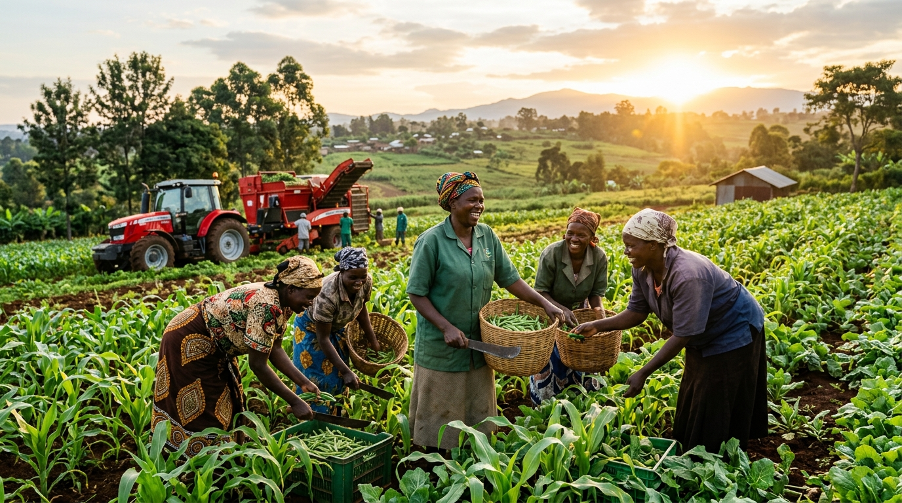

Fair Access to Harvesting Machinery for Every Woman Farmer
Empowering women smallholders through transparent machinery booking, fair scheduling, and better agricultural support.
Welcome to She Harvest
She Harvest is dedicated to eliminating mechanization inequalities. By providing an open, accountable booking queue, we ensure women farmers receive combine harvesters, tractors, and threshers exactly when their crops require it.
Select Your Portal to Get Started

Engineered for Equity
Why She Harvest Transforms Farming
A transparent booking ecosystem designed to eliminate middleman bias and guarantee women farmers dependable harvesting machinery.
Fair Machinery Access
Ensures women smallholder farmers receive fair, priority-driven access to expensive shared equipment—including combine harvesters, power tillers, and threshers—regardless of plot size.
Equitable DistributionTransparent Scheduling
Live equipment rosters and clear availability timelines ensure complete transparency. Farmers see their exact queue placement without arbitrary delays or preferential treatment.
Open TimelinesBooking Status and Alerts
Instant visual confirmation and automated schedule reminders help farmers prepare their fields for harvesting day, reducing grain loss caused by unpredictable weather changes.
Real-Time NotificationsAbout the Initiative
Bridging the Agricultural Mechanization Divide
Across many agricultural regions, women produce the majority of subsistence and cash crops yet have the least access to motorized machinery. High rental costs, lack of collaterals, and opaque booking queues often force women farmers to rely on exhausting manual harvesting or accept late equipment, leading to substantial yield losses.
She Harvest provides an institutional bridge. Through shared equipment pools and accountable officer oversight, the platform guarantees that machinery arrives when grains are ripe and weather is optimal.
Equitable Allocation
Scheduling prioritized by crop ripening urgency rather than commercial farm acreage.
Cooperative Resource Sharing
Subsidized, shared-machinery pools operated under transparent public criteria.
Shared Community Machinery Fleet
Ready for upcoming seasonal harvests
Ready to Access She Harvest?
Choose your portal below to sign in and begin managing or reserving shared agricultural equipment.